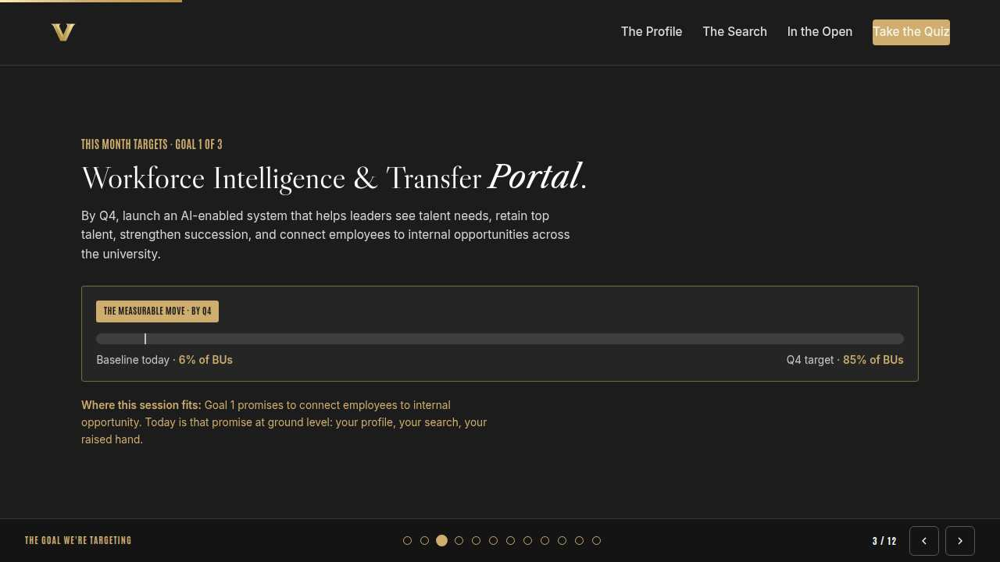
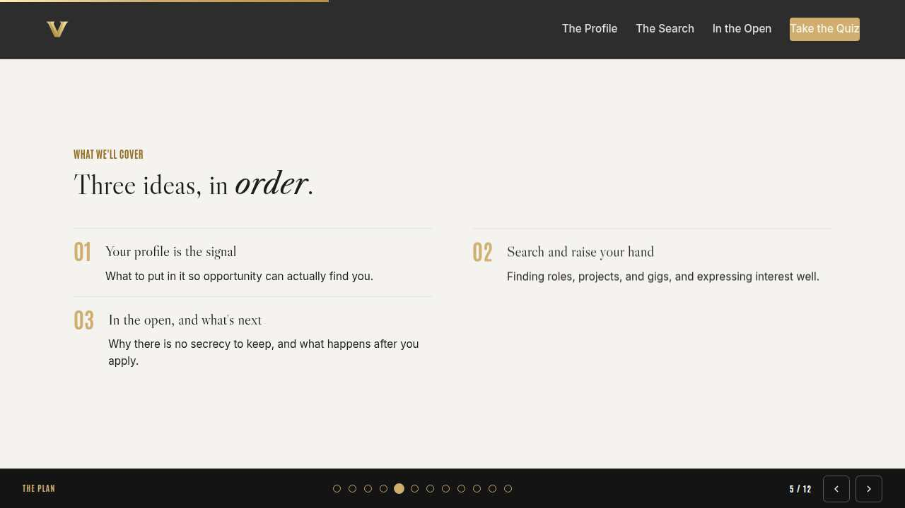

Vanderbilt · Anchor's Edge · ATD facilitator guide · print edition
The Open Door, the facilitator guide

Run of show
| Screen | Full (min) | Core (min) |
|---|---|---|
| Welcome / QR | 2 | 1 |
| The mission | 2 | 1 |
| The goal we are targeting | 2 | 1 |
| Objectives | 1 | 1 |
| Agenda | 1 | skip |
| Your profile is the signal | 8 | 6 |
| Search and raise your hand | 10 | 7 |
| In the open, and what's next | 9 | 6 |
| The core idea | 1 | skip |
| Recap quiz | 4 | 3 |
| Capstone commitment | 4 | 3 |
| Closing | 1 | 1 |
| Total | 45 | 30 |
The goal this month serves
Goal 1, Workforce Intelligence & Transfer Portal. Baseline 6% of BUs, Q4 target 85% of BUs.
Audience
All Vanderbilt staff in the Anchor's Edge weekly rhythm; no management experience assumed. Works for 6 to 40 on a call; breakouts run in pairs. No prerequisites; April is the Transfer Portal in Practice month, and this is the hands-on walkthrough.
Room setup
Virtual, instructor led: camera on, deck link in chat, breakouts of 2 available. Learners follow on their own screens via the welcome-slide link or QR. Nothing typed into the deck is saved or sent.
Materials
- Meeting platform with screen share and breakout rooms; deck link ready to paste in chat
- Facilitator machine with the facilitator edition open; notifications off
- Learners on their own devices with the learner link
- Chat open for share-outs; the capstone copy button pastes there cleanly
A week before
- Run the learner edition start to finish and do every interaction honestly; you will demo at least one live.
- Read this month's theme page on the Anchor's Edge dashboard so the goal tie-in is fluent.
- Send the invite with the learner link and one line on what to bring.
The day before
- Test screen share with the facilitator edition; confirm the notes rail is readable.
- Open the learner link on a second device; the QR must land there.
- Run the section interactions once so you can drive them without reading.
30 minutes before
- Welcome slide up as people join; link pasted in chat.
- Close every other tab; silence the machine.
- Breakout rooms pre-configured in pairs.
When things go sideways
If Screen share or the site fails mid-session: Paste the learner link in chat and narrate from your own browser; every interaction runs on learner devices without the share.
If Breakout rooms are unavailable: Run the breakout prompts as 60-second chat storms: everyone types their answer at once, you read the best three aloud.
If Someone asks a Portal question you cannot answer, like a specific stage or policy: Say so plainly, capture it in chat, tag it for the navigators, and send the answer in the 7-day pulse. Modeling 'ask a navigator' is itself the lesson.
If Someone shares a story of a manager who blocked an internal move: Thank them for the honesty, restate the norm without debating their case, and point to Monday's sending-manager session as the fix in motion. Route the specific case to HR offline.
Tough questions, ready answers
Q: Will my manager see that I expressed interest?
Assume yes, and lead with it: the design expectation is that you tell them yourself first. Managers here are trained as sending managers; the conversation is usually easier than the one you are imagining, and a navigator can help you plan it.
Q: Is expressing interest a commitment to take the role?
No. It opens a conversation, and you can step back at any stage. Treat it like raising your hand in a meeting: it means 'tell me more,' and plenty of strong moves start with three raised hands and one real conversation.
Q: I like my job. Why should I bother with a profile?
A current profile serves people who are staying too: it is how project leads find you for gigs, how your skills get seen beyond your team, and how the university plans. Opportunity finding you costs nothing; being invisible might.
Copy-paste templates
Pre-work invite (paste into the calendar invite)
Subject: Tuesday, 45 minutes inside the Transfer Portal. Bring your login and one skill you use that your job title hides. Live and hands on; have the session link open on your own screen, with the Portal in a second tab if you can.
7-day pulse (send one week after)
Subject: Did the Portal move happen? Three lines, reply whenever: 1) Did the move on your card happen? 2) What did you find that you did not know existed? 3) What is your next move, and would a navigator session help it?
After the session
Seven days out, send the pulse: 'Did the Portal move on your card happen? What did you find that you did not know existed? What is your next move?' Count of completed Portal moves is the Level 3 metric for the month.

Welcome / QR Full 2 min · Core 1
Get everyone into the deck on their own screen and set the tone: 45 minutes, live, hands on.
Say
“Welcome to Take-Off Tuesday. Scan the code or click the link in chat so this session runs on your screen too. Forty-five minutes, one focus: Navigating the Transfer Portal, end to end.”
Do
- Slide up as people join; link pasted in chat every few minutes.
- State the norm once: type into your own screen, nothing you enter is saved or sent.
Watch for: People lurking without the deck open. The interactions only land if the deck is on their screen.
Transition: “Before the topic, thirty seconds on why Vanderbilt is asking for this hour.”

The mission Full 2 min · Core 1
Anchor the session in the Chancellor's charge so the next 40 minutes read as mission work, not admin.
Say
“This year of learning hangs off one sentence from the Chancellor: Vanderbilt will define the great university of the 21st Century and be it. A university that will define the century cannot let opportunity depend on who you happen to know. The Portal makes internal mobility part of Exceptional Core Operations: visible, open, and one profile away for every staff member.”
Do
- Read the mission line slowly, once.
- Point at the tie-in line and let it sit; no discussion needed here.
Transition: “That is the why. Here is the number we are moving.”

The goal we are targeting Full 2 min · Core 1
Name the enterprise goal this month serves and the measurable move it needs.
Say
“Every month of Anchor's Edge lands on one of three enterprise goals. This month is Goal 1, Workforce Intelligence & Transfer Portal: By Q4, launch an AI-enabled system that helps leaders see talent needs, retain top talent, strengthen succession, and connect employees to internal opportunities across the university. Today's baseline is 6% of BUs; the Q4 target is 85% of BUs. Goal 1 promises to connect employees to internal opportunity. Today is that promise at ground level: your profile, your search, your raised hand.”
Do
- Let the meter animate before you speak to the number.
- One line, not a lecture: this session is one of the moves that closes the gap.
Transition: “Here is what you will be able to do in 45 minutes.”

Objectives Full 1 min · Core 1
Set the contract for the session in under a minute.
Say
“By the end of this session: build a portal profile that shows your full skills, beyond your current title; find internal roles, projects, and gigs by the skills you want to use; express interest in the open, and know what happens next. That is the whole contract.”
Do
- Read the three objectives briskly; do not elaborate yet.
Transition: “Three stops to get there.”

Agenda Full 1 min · Core skip
Show the path so the room can pace itself.
Say
“Three stops: your profile is the signal, search and raise your hand, in the open, and what's next. Each one has something to play with, so keep the deck open.”
Do
- Point once at each stop; ten seconds each.
Transition: “Stop one.”
Core path: Core: skip the read-through, gesture at the slide in passing.

Your profile is the signal Full 8 min · Core 6
Get every profile past the title-only trap: skills from anywhere, plus what they want to build.
Say
“Here is how the Portal actually works: it matches people to opportunity through skills. Which means your profile is an antenna. If it only repeats your job title, it can only pick up your current job. Most of what you can do never made it into a job description, and today's first move is getting it into your profile.”
Do
- Read the profile rule card aloud once.
- Run the knowledge check; ask in chat who has updated their profile this year.
- Run the breakout: one skill your title would never suggest.
Ask
“What is a skill you almost left off because it felt unofficial?”
Expect:
- Skills from volunteer work or side projects
- People skills that feel too soft to list
- Tools learned outside any training
Respond: Those unofficial skills are exactly the ones the Portal cannot guess from your title. Unofficial is where the matches come from.
Debrief: The Portal reads skills, so an incomplete profile is a smaller career. Ten minutes fixes it.
Watch for: People listing duties instead of skills. Redirect: what can you do, wherever you learned it?
Transition: “The antenna is up. Now let's go find the signals.”
Core path: Core: skip the breakout; ask for one hidden skill in chat instead.

Search and raise your hand Full 10 min · Core 7
Teach skill-first search across roles, gigs, and projects, and the open way to express interest.
Say
“Now the search. The instinct is to look for your own job title in other buildings, and that finds you the job you already have. Search instead by the skills you want to use more. And notice the Portal lists gigs and short projects alongside jobs; a six-week gig is the lowest-risk way to test a direction ever invented. Then, when something pulls at you, raise your hand in the open.”
Do
- Run Build your first pass; two minutes to make both choices and run it.
- Ask a volunteer to read their outcome aloud, weak or strong.
- Point at the pattern: skill-first search, open hand.
Ask
“Why do gigs and projects matter so much for a first Portal move?”
Expect:
- Lower commitment than a full move
- A way to test a direction
- A way to be seen by another team
Respond: All three. A gig is a working interview in both directions, and it builds the exact evidence your profile needs for the bigger move later.
Debrief: Search by skill, include gigs, raise your hand where people can see it. That is the whole method.
Watch for: Anyone treating express-interest as a binding commitment. It opens a conversation; it signs nothing.
Transition: “The open hand raises one worry: who sees it? Straight into that.”
Core path: Core: everyone runs the builder solo; skip the read-aloud.

In the open, and what's next Full 9 min · Core 6
Retire the secrecy instinct and give everyone the after-you-apply map, including navigators.
Say
“Everything you know about job searching says be quiet about it. That habit came from a world where your manager finding out was a risk. Inside Vanderbilt the design is the opposite: internal mobility is encouraged, managers are expected to support moves, and there is a whole role, the navigator, whose job is helping yours succeed. So the last skill today is moving in the open and knowing what happens after you raise your hand.”
Do
- Run Call the move live; everyone plays on their own screen.
- After round one, pause: ask who felt the pull of keeping it secret anyway.
- Run the breakout on the hardest habit to drop.
Ask
“What actually happens after you express interest?”
Expect:
- The hiring team sees your profile and interest
- There are stages you can ask about
- A navigator can tell you where it stands
Respond: Right, and that last one is the habit to build: silence in the process is a question, and navigators are the people built to answer it.
Debrief: Secrecy is an old habit from external searches. Here, the open move is the strong move, and navigators are the map.
Watch for: Skeptics with a story about a manager who punished a move. Take it seriously: sending managers are this month's Monday session, and specifics belong with HR rather than a debate in the room.
Transition: “Quick recap, then you pick your own Portal move.”
Core path: Core: run the trainer, skip the breakout, take one voice on the debrief question.

The core idea Full 1 min · Core skip
Land the one sentence the session exists to install.
Say
“If you keep one sentence from today, this is it. Read it once, out loud: Your next Vanderbilt role cannot find you if your profile only shows your last one.”
Do
- Pause two beats after reading; the word animation carries it.
Transition: “The recap makes it stick.”
Core path: Core: pass through in stride; the sentence reads itself.

Recap quiz Full 4 min · Core 3
Score the learning while it is fresh; wrong answers are teaching moments, not failures.
Say
“Three questions, on your own screen. Answer honestly; the explanations are where the learning sticks.”
Do
- Give the room 90 seconds to run it individually.
- Ask for a show of results in chat: how many got 3 of 3?
- Read out the explanation for whichever question drew the most misses.
Watch for: Rushing past the why lines. The explanations carry the teaching.
Transition: “Now point it at your real week.”

Capstone commitment Full 4 min · Core 3
Convert the session into one named, dated action per person.
Say
“Now make it yours. One Portal move: the profile refresh, the open search, or the raised hand. Pick the move, pick the window, build the card, and copy it somewhere you will see it this week. Two minutes, quiet, go.”
Do
- Two quiet minutes; everyone builds their own card.
- Invite two or three volunteers to read their card aloud or paste it in chat.
- Remind: copy the card somewhere you will see it this week.
Watch for: Vague entries. Nudge for a name-able situation and a real date.
Transition: “Last slide.”

Closing Full 1 min · Core 1
End with the next step and where this thread continues.
Say
“You leave with an antenna, a search method, and an open hand. Thursday's Thrive session builds the human side of this: networking across departments, the internal bridges that carry news of opportunity before any posting goes up. And if you want company on your first pass, the navigators run a live Portal walkthrough and a skill-profile clinic this month, and the LinkedIn Learning pick is Building Your Team by Chris Croft.”
Do
- Point at the next-step card; one sentence.
- Name the rest of the week's rhythm: the other sessions echo this month's theme.
Generated from facilitator/notes.json. The on-screen facilitator edition lives at ./ alongside this guide.